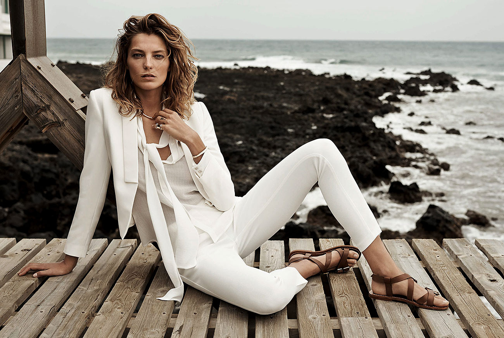
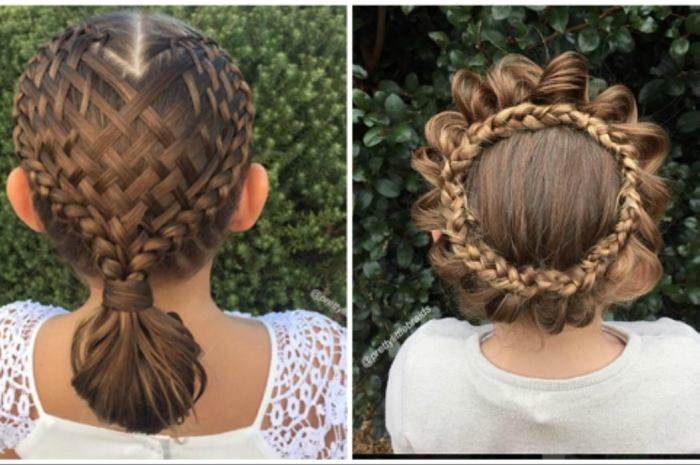
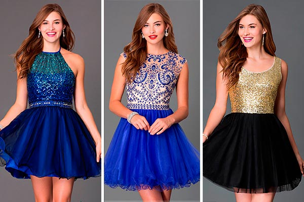
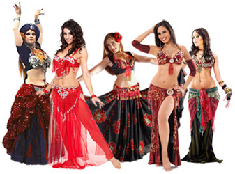
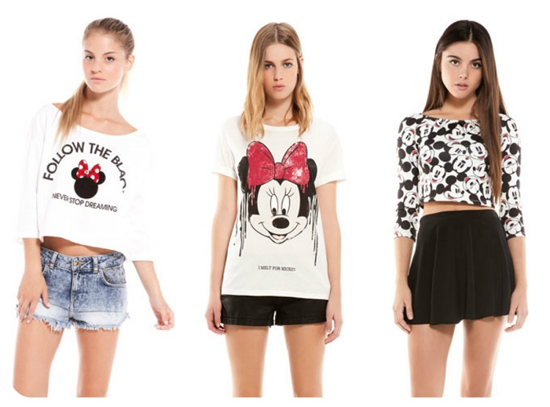

Esta sección de corrección de estilo pretende ser un espacio de reflexión sobre la corrección ortotipográfica y de estilo, tareas que vengo realizando desde hace bastantes años. Aquí podrás leer aforismos, comentarios, reflexiones, ejemplos de incorrecciones habituales, recomendaciones, etcétera, sobre la corrección de textos y su circunstancia. El objetivo es ofrecerte -dentro de mis limitaciones- recursos que te puedan ayudar a comprender mejor los vericuetos de nuestro idioma y a sortear sus muchas trampas.

El estilo de Daria Werbowy
A primera vista, Daria Werbowy destaca por su estilo. A segunda, te das cuenta de que es un simple traje oscuro. Y a tercera te preguntas cómo ha conseguido con algo tan sencillo capturar así toda nuestra atención. La respuesta está en los detalles: un fit perfecto (hombros encajados, corte slim y largos impecables), una solapa en punta de lanza (más formal que la tradicional de muesca) y unos complementos sobrios bien elegidos y combinados (matricula de honor en hacer nudos de corbata).

Conozca los 15 estilos de trenzas que una mamá le hizo a su hija
No importa cómo lo lleves, si es corto o largo, el cabello de una chica siempre luce encantador y femenino. Y algo que sin duda todas amamos es poder inventar nuevos peinados, y qué mejor que hacerlo utilizando una trenza. Existen muchos tipos de trenzas que pueden hacer lucir nuestro cabello de una manera espectacular.
Los 5 pilares de tu relación que en verano se pueden tambalear
El peligro. Economía, infraestructura, presión… Hay muchos motivos por los que al final podemos acabar pasando las vacaciones (o parte de ellas) con la familia.
¡Ay, la familia! La queremos, la adoramos, qué majos son… Eso sí, en pequeñas dosis, porque lo poco gusta y lo mucho cansa, como la canela. Y si con lo que nos encontramos es con las dos familias juntas, en el espacio-tiempo.
ESTILOS DE VESTIDOS PARA TU CORTEJO
Te encuentras planificando todos los detalles para que tus 15 años sean todo un éxito, pero aún no te decides por el vestido que usarán tus damas ¡No te preocupes! Te mostraremos los estilos de vestidos más hermosos y a la moda para que tus chicas luzcan fabulosas en tu noche especial.Los vestidos brillantes nunca pasan de moda y se estilan mucho para fiesta de quince años.

El Vestido Perfecto

Tipos de samba
Mundialmente conocido- Samba enredo: Canción ejecutada por “escolas de samba” de Rio de Janeiro, cuya letra resume poéticamente algún tema histórico, biográfico o de creación libre, escogido para la presentación de la escuela de samba en su desfile-espectáculo anual.* Son cantadas por vocalistas masculinos, acompañados por cavaquinhos y un gran equipo percusionista, produciendo una textura compleja y densa, enfatizando el segundo tiempo de cada compás (la síncopa, ¿recordáis?). Han sido de inspiración para grupos percusionistas de todo el mundo.

Estilos casuales que me encantan!
Happy New Year!!!!! Estamos comenzando un nuevo año y como les dije en el post anterior, espero que todas lo hayamos recibido con nuevas esperanzas, sueños y metas y claro…que trabajemos para lograrlas ;). En este post comparto con ustedes algunos looks casuales de Pinterest que me encantan.Uff, creo que este es mi favorito. No visto mucho de colores tierra, pero irónicamente me gustan mucho los looks con estos colores. Con lo que tengo en mi closet trataré de lucir algo parecido. Se ve cómodo y chic a la vez.